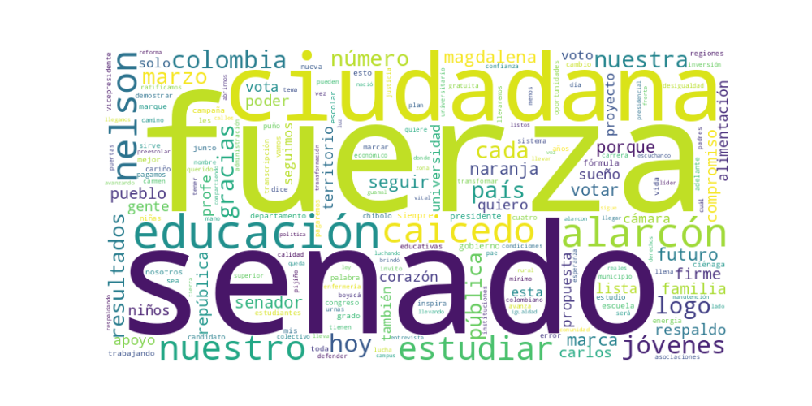

Seguidores: 1,432
Reporte de Análisis de Comunicación Política
Candidato: Nelson Alarcón (y fórmula de Carlos Caicedo para Vicepresidencia, 2026). Plataforma Analizada: Publicaciones en Instagram.
El estilo de comunicación es predominantemente cercano, informal y de tono popular, aunque con momentos de formalidad discursiva al presentar propuestas de gobierno. Utiliza un lenguaje accesible y emotivo, recurriendo con frecuencia a un registro coloquial y afectivo ("gracias de corazón", "mi alma", "nos llena el corazón"). Las publicaciones simulan una conversación directa con el elector, especialmente a través de agradecimientos y relatos personales que buscan generar identificación. No obstante, cuando aborda políticas públicas (como la educación), adopta un tono más técnico y propositivo, presentando cifras y mecanismos específicos, sin perder su carácter pedagógico.
El tono general es esperanzador, propositivo y de gratitud. Predomina un sentimiento de optimismo combativo, que combina la crítica al sistema actual (especialmente en educación y corrupción) con una narrativa clara de solución y futuro mejor ("el poder vuelve al pueblo"). Es un discurso de movilización afectiva, que busca generar empatía y confianza a través del agradecimiento constante y el relato de cercanía territorial.
La estrategia de comunicación de Nelson Alarcón se articula en torno a una identidad de marca clara y emocional: el educador cercano y el gestor regional que devuelve el poder a las bases. Su discurso está dirigido a una audiencia joven, popular y regional, especialmente del Caribe colombiano, buscando evocar identificación, esperanza y un sentido de pertenencia a un proyecto "de la gente". Combina un populismo programático (ofrece soluciones concretas y radicales como pagar por estudiar) con una narrativa de arraigo territorial y gratitud personal. El objetivo final es presentarse no solo como un candidato, sino como un símbolo accesible de cambio tangible y justicia social, canalizando el descontento con el statu quo hacia una oferta electoral emotiva y concreta.
Reporte de Análisis Estratégico de Comunicación Política
1. Resumen del Patrón de Éxito: El éxito del candidato se fundamenta en una fórmula dual de esperanza concreta y cercanía humana. Sus videos más exitosos no se limitan a promesas políticas genéricas, sino que las encarnan en propuestas disruptivas y tangibles (como “te pagamos por estudiar”), y las personifican a través de testimonios de ciudadanos comunes, historias propias y un lenguaje cálido y directo. Combina un mensaje transformador (romper barreras) con una narrativa profundamente personal y afectiva.
2. Tácticas de Comunicación Clave: * Propuesta Disruptiva y Concreta: Su táctica principal es centrar la comunicación en una oferta política específica y novedosa: el Estado pagará un salario a los jóvenes para que estudien. Este no es un slogan abstracto, sino una promesa medible ($1.750.000 mensuales) y fácil de entender, que se repite como un mantra en casi todos los videos, asociándola directamente a la fórmula “Caicedo Presidente, Alarcón Vicepresidente”. * Humanización y Testimonio: Utiliza abundantemente testimonios de jóvenes narrando en primera persona sus sueños truncados y su lucha por trabajar y estudiar. Esto transforma una política pública en una historia humana con la que la audiencia puede empatizar. Además, el candidato y su fórmula usan un tono cercano (“desde chibolo”, “nos llena el corazón”), creando una imagen de líderes accesibles y empáticos. * Contraste entre la Denuncia y la Solución Propia: Establece un claro contraste binario. Por un lado, denuncia un “enemigo” (la corrupción que roba el PAE, el sistema que obliga a elegir entre trabajo y estudio, la infraestructura educativa decadente). Por otro, posiciona su fórmula como la solución única y directa a ese problema (“nosotros te pagaremos”, “entregaremos la administración a los padres”, “vamos a intervenir”). * Llamado a la Acción Clara y Repetitivo: El contenido está orientado a la acción electoral directa. Se instruye repetida y pedagógicamente al electorado sobre cómo votar: “marca el logo que se ve naranja”, “Fuerza Ciudadana número 4”. Este pragmatismo convierte la inspiración emocional en un acto concreto (el voto), cerrando el círculo de la persuasión.
3. Temas de Mayor Resonancia: El tema absolutamente central y de mayor resonancia es la Educación, presentada no como un derecho abstracto, sino como una palanca de movilidad social y justicia económica. Sub-temas específicos que generan interacción son: * Financiación y acceso a la universidad (“TePagamosPorEstudiar”). * Corrupción en programas sociales (PAE - Plan de Alimentación Escolar). * Infraestructura educativa digna, especialmente en zonas rurales. * Cierre de brechas para los jóvenes y las regiones olvidadas.
4. Perfil de la Audiencia Implícita: El lenguaje, los temas y los testimonios apuntan claramente a dos audiencias primarias: 1. Jóvenes y sus familias: Especialmente aquellos de contextos socioeconómicos medios y bajos que enfrentan la disyuntiva trabajo/estudio. Se les habla como a protagonistas del cambio (“la nueva generación quiere cambios reales”). 2. La base territorial y leal: Hay un fuerte componente de agradecimiento y consolidación del voto en regiones específicas (Magdalena, Boyacá, Pijiño del Carmen), dirigido a electores que ya conocen al candidato y buscan ratificar su apoyo. El tono es de gratitud y refuerzo de la lealtad.
5. Conclusión Estratégica: La clave fundamental del poder de su discurso radica en su capacidad para traducir una ideología de justicia social en una transacción política concreta y emocionalmente convincente. No vende solo ideas o valores; vende una solución material específica (dinero por estudiar) envuelta en una narrativa de esperanza personalizada. Esto lo diferencia del discurso político tradicional, que suele ser más general y abstracto. Su comunicación es propositiva, personal y pedagógica, logrando que una política compleja sea percibida como un beneficio directo, tangible y humano para el elector.

Caption: ¿Trabajar o estudiar? Ya no tienes que elegir. Tu esfuerzo vale. Tu tiempo vale. Tu futuro también. Nosotros te pagaremos por estudiar. 📚 Porque cuando un joven avanza, el país no se queda atrás.
Likes: 166 | Comentarios: 1 | Reproducciones: 1,917
Ver en InstagramCaption: Nuestra propuesta #TePagamosPorEstudiar la llevaremos a todos los rincones de Colombia. #CaicedoPresidente #AlarcónVicepresidente
Likes: 20 | Comentarios: 0 | Reproducciones: 236
Ver en InstagramCaption: En nuestro Gobierno Caicedo Presidente, Alarcón Vicepresidente el Plan de Alimentación Escolar PAE será con almuerzo caliente y refrigerio reforzado para todas las niñas, niños y jóvenes desde el preescolar de tres grados hasta el grado 11; el manejo y la administración del PAE será directamente por los Padres de Familia a través de sus asociaciones con el acompañamiento de las administraciones municipales. Acabaremos con todo tipo de intermediación y corrupción. #CaicedoPresidente #AlarcónPresidente
Likes: 84 | Comentarios: 2 | Reproducciones: 1,089
Ver en Instagram